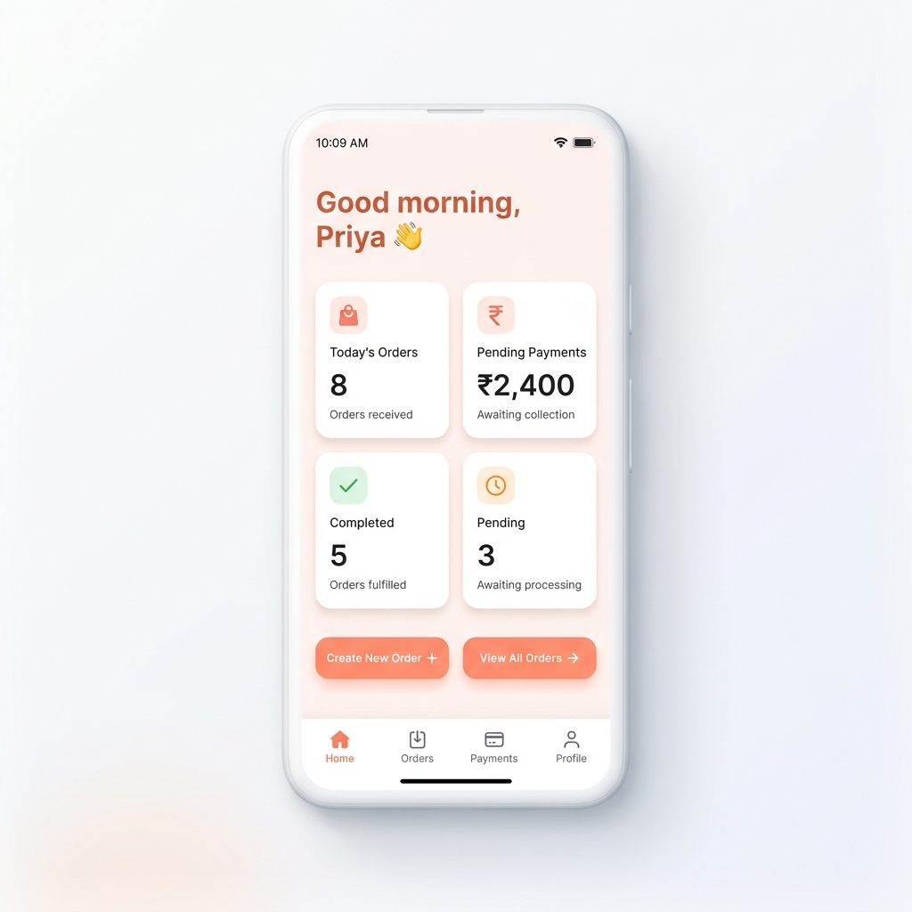

SuperLocal helps laundries, salons, tutors, garages, tailors, tiffin services, and other local businesses manage orders, payments, and customer communication — from one simple platform.

Orders, payments, addresses — all scribbled and easily lost.
Customer messages buried in group chats and personal threads.
"Sharma ji ka payment aaya kya?" — nobody knows for sure.
Cash, UPI, credit — no single view of what's owed.
Everything a local business needs. Nothing it doesn't.
Track every customer order, its status, and service details — all in one place.
Send payment reminders and updates directly to customers. One tap, personalized.
See exactly who owes you and how much. Mark payments with a single tap.
Manage appointments and recurring orders without double-booking.
Help nearby customers find you and trust your service quality.
Coordinate logistics, track deliveries, and keep customers informed.
If you serve customers locally, SuperLocal is built for you.
| Traditional Platforms | SuperLocal |
|---|---|
| Consumer-first | Provider-first |
| Discovery only | Operations + bookings |
| Providers become gig workers | Providers keep ownership |
| Fragmented workflows | Unified business system |
| Generic tools | Built for local businesses |
We've been interviewing and onboarding local businesses across Pune. The same problems keep repeating.
"I have 40 regular customers. I track everything in my head. When I forget, I lose money."
"I send the same WhatsApp message 20 times a day for payment reminders."
"I tried apps before — they're all built for big companies. I just need something simple."
Recurring problems we found:
SuperLocal aims to become the trust layer between customers and local businesses.
Get early access to operational tools and pilot programs. We'll onboard you personally.
Get notified when SuperLocal launches in your area. Be the first to discover local services.
SuperLocal started after directly working with MSMEs and local businesses across Maharashtra.
We saw businesses with real demand, loyal customers, and incredible hustle — but almost no operational infrastructure.
Most software today is built for large businesses. We believe local entrepreneurs deserve better tools too.